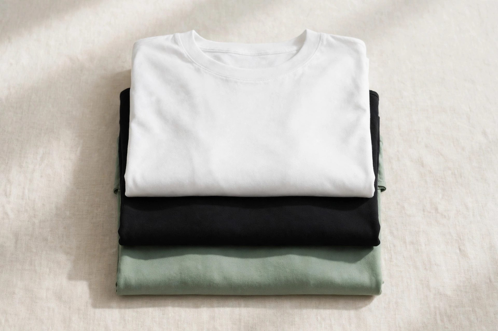

A t-shirt looks like the easiest order in the whole catalogue, and that is exactly where most first orders go wrong. There is no padding to hide behind, no lining. If the fabric is wrong, the customer feels it in the first ten seconds of wearing it, and no print on earth saves a shirt that feels cheap. As a custom t-shirt manufacturer in Sialkot, Pakistan, we make tees for streetwear labels, gyms, clubs and shops. The difference between a tee that sells out and a tee that sits in a box usually comes down to the decisions made before anyone talks about artwork.

GSM is the number most buyers ask about last, and it should be the first thing they settle. It means grams per square metre, the weight of the fabric, and on a t-shirt it decides how the shirt hangs, how warm it feels and how a print sits on it. We work in three bands, and they are not better or worse than each other. They are different shirts for different customers.
Lightweight, around 160 to 180 GSM, is the soft, drapey tee. It suits summer drops, women's fitted styles and gym tees, anything worn close to the body in warm weather. Water-based inks suit it, because the ink sinks into the fibre instead of sitting on top. Its weakness is honesty: a lightweight tee shows every shortcut. Poor yarn looks thin, a weak rib bags at the neck, and a big solid print can stiffen the chest.
Midweight, roughly 180 to 220 GSM, is where most brands end up living, and for good reason. It holds its shape after washing, takes every print method well, and feels like a proper retail tee in the hand. In our experience, most buyers who arrive asking for heavyweight want midweight once they have held both in their hands. Heavy sounds premium. Midweight wears premium, day after day.
Heavyweight, 220 GSM and above, is the structured, boxy streetwear tee. It stands away from the body, it photographs well, and it feels expensive the moment a customer picks it up. It also runs hot, costs more to ship per piece, and needs a looser cut or it feels stiff. It is the right choice for a winter drop or a boxy streetwear fit, and the wrong one for a summer festival tee.
GSM alone does not tell you the quality of the cloth. A well-knitted 180 GSM single jersey in combed cotton will feel better and last longer than a loosely knitted 240 GSM in short-staple yarn. Ask what the yarn is, not only what the weight is.
Most of our tees are cut from single jersey, smooth on the face and a little textured on the back, and the first choice inside that is the fibre. Pure cotton is the classic for a reason. It is soft against the skin, it breathes, and it takes print the way print wants to be taken. It shrinks a little on the first wash, usually a few percent, and a good factory cuts with that in mind.
A cotton-polyester blend, usually 60/40 or 80/20, trades some of that softness for behaviour. It holds its shape better, shrinks less, dries faster and keeps its colour through more washes. For a gym or work tee, that trade is worth making; for a fashion tee, it usually is not.
One thing blends change is printing. Polyester fibres do not take water-based ink the way cotton does, so a DTG print on a dark blend needs a heavier white underbase and can feel thicker. Tell the factory the artwork before you settle the fabric, not after.
Screen printing is the workhorse. A separate screen for each colour. It suits bold graphics in one to three colours, and runs where the setup cost spreads across enough pieces. Water-based inks sink into the fibre and leave a soft hand, which suits lightweight tees. Plastisol sits on top and gives a brighter, slightly raised finish on dark shirts. Done properly, a screen print survives dozens of washes without cracking.
DTG, direct to garment, is a printer for fabric. It suits detailed, photographic artwork and small runs, because there is no screen to set up. That is also its weakness on tees: a large solid DTG print on a lightweight shirt can feel like a sheet of plastic across the chest, and the white underbase dark garments need can feel heavier still. Most buyers get this wrong. They choose DTG because it sounds modern, then wonder why a shirt that looked perfect in the photograph feels stiff on the body.
Embroidery is the third option, and on a tee it belongs in small doses: a chest logo, a small mark on the sleeve. It reads premium in a way print never does. Keep it small. A large embroidered design on a lightweight tee will pucker the fabric around it, and no backing fixes a design that was too big for the cloth.
Ask a customer what made them stop wearing a tee and they will rarely say the print. They will say the collar went baggy, or the shoulders stretched out of shape. That is where a cheap tee confesses, usually after the second or third wash.
The neck rib is the first thing to get right. A 1x1 ribbed collar should stretch when you pull it and come straight back when you let go. If it stays stretched, the shirt is finished, however good the print is. We bind our collars with a rib that holds its recovery and stitch it twice, because a collar that fails is the whole shirt failing.
Shoulder taping is the second small thing that matters out of proportion to its cost. A strip of tape sewn inside the shoulder seam stops it stretching under the weight of the shirt itself, which is exactly what happens to untaped tees on a hanger. It costs almost nothing and changes how the shirt looks after a month. Ask whether your factory tapes the shoulders.
A size run is not five separate patterns. It is one pattern graded up and down, and if the grading is wrong, the small is a tube and the extra large is a tent, even though the medium fits. This is the most common fit complaint we see, and it almost never comes from the sample, which is usually a medium. It comes from the grades nobody checked.
Before you approve a sample, ask for the graded measurement chart: chest, body length and sleeve length for every size you are ordering. Check at least two sizes, usually the smallest and the largest, because grading errors show up at the ends first.
And do not borrow another brand's size chart without checking the measurements behind it. Your customers buy your sizes, not theirs.
I still check a sample tee the way I did when we started. I pick it up by the collar first, not the body. I pull the rib gently and let it go, and watch whether it comes straight back or stays stretched. Then I turn the shirt inside out and look at the shoulder tape and the stitching at the armpit, because that is where a shirt fails first, and nobody photographs it.
Then I wash it. Twice. A tee that looks perfect on the table and wrong after two washes is not a sample, it is a warning, and I would rather find it in my own wash than have your customer find it in theirs. Only then do I say yes to the bulk order. It takes an extra day and has saved more orders than I can count.
A label came to us last year with a summer drop already made elsewhere. Heavyweight tees, 240 GSM, boxy cut, a big chest print, beautiful on the rail. In the shop, in July, nobody wanted to try one on twice. The shirts were not badly made. They were the wrong shirt for the season.
The fix was not complicated, which is the point. We re-cut the same design at 180 GSM in single jersey cotton, kept the print, and changed the ink to water-based so the chest stayed soft. The reorder moved, and the heavyweight shirts were held for the autumn drop, where they belonged.
The lesson for new buyers: weight is a season decision, not a quality decision. Heavyweight is not better than lightweight. It is heavier. The right weight is the one your customer reaches for on the day they wear the shirt.
Trial orders run from 15 to 50 pieces per style, sized to real demand. Once we have your design or tech file, we quote exactly for that piece, never from a one-line description, and the sample is developed in 7 to 10 working days, with photos for your approval before anything goes into bulk. Your own labels and tags are sewn in, and a "Made in [your country]" tag can be added on request. Every order gets a final quality check, with photos shared before dispatch, and we export from Sialkot to North America and Europe.
Five minutes with the sample, before you say yes:
If all five pass, confirm the order. If one fails, it is a one-day fix now and a one-season problem later.
You do not need a finished tech pack to begin. One design is enough, or a clear photograph of a tee you like, or a reference sample. Send it on WhatsApp at +92-339-5099397 or by email at safettech@outlook.com, and we will reply with an exact quote for that piece and a sampling plan. Or use our contact page to request a sample. If you want to see the rest of the range first, our streetwear & outerwear page shows what else we make to the same standard.

A t-shirt is the first thing most brands ever order, and it is still the piece I judge a factory by. Send me your design and tell me who it is for, and I will tell you honestly which weight and which print will serve that customer best.
Ahmed Zahid
Founder & Director, Safe-T TECH International · Sialkot, Pakistan
Send your design today — samples in 7–10 days, trial orders from just 15–50 pieces.